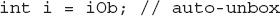
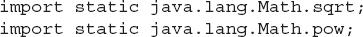

Chapter 12
Enumerations, Autoboxing, Static Import, and Annotations
Key Skills & Concepts
 Understand enumeration fundamentals
Understand enumeration fundamentals Use the class-based features of enumerations
Apply the values( ) and valueof( ) methods to enumerations
Create enumerations that have constructors, instance variables, and methods
Employ the ordinal( ) and compareTo( ) methods that enumerations inherit from Enum
Use Java’s type wrappers
Know the basics of autoboxing and auto-unboxing
Use autoboxing with methods
Understand how autoboxing works with expressions
Apply static import
Gain an overview of annotations
This chapter discusses enumerations, autoboxing, static import, and annotations. Although none of these were part of the original definition of Java, each having been added by JDK 5, they significantly enhanced the power and usability of the language. In the case of enumerations and autoboxing, both addressed what was, at the time, long-standing needs. Static import streamlined the use of static members. Annotations expanded the kinds of information that can be embedded within a source file. Collectively, these features offered a better way to solve common programming problems. Frankly, today, it is difficult to imagine Java without them. They have become that important. Also discussed in this chapter are Java’s type wrappers.
Enumerations
In its simplest form, an enumeration is a list of named constants that define a new data type. An object of an enumeration type can hold only the values that are defined by the list. Thus, an enumeration gives you a way to precisely define a new type of data that has a fixed number of valid values.
Enumerations are common in everyday life. For example, an enumeration of the coins used in the United States is penny, nickel, dime, quarter, half-dollar, and dollar. An enumeration of the months in the year consists of the names January through December. An enumeration of the days of the week is Sunday, Monday, Tuesday, Wednesday, Thursday, Friday, and Saturday.
From a programming perspective, enumerations are useful whenever you need to define a set of values that represent a collection of items. For example, you might use an enumeration to represent a set of status codes, such as success, waiting, failed, and retrying, which indicate the progress of some action. In the past, such values were defined as final variables, but enumerations offer a more structured approach.
Enumeration Fundamentals
An enumeration is created using the enum keyword. For example, here is a simple enumeration that lists various forms of transportation:
The identifiers CAR, TRUCK, and so on, are called enumeration constants. Each is implicitly declared as a public, static member of Transport. Furthermore, the enumeration constants’ type is the type of the enumeration in which the constants are declared, which is Transport in this case. Thus, in the language of Java, these constants are called self-typed, where “self” refers to the enclosing enumeration.
Once you have defined an enumeration, you can create a variable of that type. However, even though enumerations define a class type, you do not instantiate an enum using new. Instead, you declare and use an enumeration variable in much the same way that you do one of the primitive types. For example, this declares tp as a variable of enumeration type Transport:
Because tp is of type Transport, the only values that it can be assigned are those defined by the enumeration. For example, this assigns tp the value AIRPLANE:
Notice that the symbol AIRPLANE is qualified by Transport.
Two enumeration constants can be compared for equality by using the = = relational operator. For example, this statement compares the value in tp with the TRAIN constant:
An enumeration value can also be used to control a switch statement. Of course, all of the case statements must use constants from the same enum as that used by the switch expression. For example, this switch is perfectly valid:
Notice that in the case statements, the names of the enumeration constants are used without being qualified by their enumeration type name. That is, TRUCK, not Transport.TRUCK, is used. This is because the type of the enumeration in the switch expression has already implicitly specified the enum type of the case constants. There is no need to qualify the constants in the case statements with their enum type name. In fact, attempting to do so will cause a compilation error.
When an enumeration constant is displayed, such as in a println( ) statement, its name is output. For example, given this statement:
the name BOAT is displayed.
The following program puts together all of the pieces and demonstrates the Transport enumeration:
The output from the program is shown here:
Before moving on, it’s necessary to make one stylistic point. The constants in Transport use uppercase. (Thus, CAR, not car, is used.) However, the use of uppercase is not required. In other words, there is no rule that requires enumeration constants to be in uppercase. Because enumerations often replace final variables, which have traditionally used uppercase, some programmers believe that uppercasing enumeration constants is also appropriate. There are, of course, other viewpoints and styles. The examples in this book will use uppercase for enumeration constants, for consistency.
Java Enumerations Are Class Types
Although the preceding examples show the mechanics of creating and using an enumeration, they don’t show all of its capabilities. Unlike the way enumerations are implemented in some other languages, Java implements enumerations as class types. Although you don’t instantiate an enum using new, it otherwise acts much like other classes. The fact that enum defines a class enables the Java enumeration to have powers that enumerations in some other languages do not. For example, you can give it constructors, add instance variables and methods, and even implement interfaces.
The values( ) and valueOf( ) Methods
All enumerations automatically have two predefined methods: values( ) and valueOf( ). Their general forms are shown here:
public static enum-type[ ] values( )
public static enum-type valueOf(String str)
The values( ) method returns an array that contains a list of the enumeration constants. The valueOf( ) method returns the enumeration constant whose value corresponds to the string passed in str. In both cases, enum-type is the type of the enumeration. For example, in the case of the Transport enumeration shown earlier, the return type of Transport.valueOf("TRAIN") is Transport. The value returned is TRAIN. The following program demonstrates the values( ) and valueOf( ) methods:
The output from the program is shown here:
Notice that this program uses a for-each style for loop to cycle through the array of constants obtained by calling values( ). For the sake of illustration, the variable allTransports was created and assigned a reference to the enumeration array. However, this step is not necessary because the for could have been written as shown here, eliminating the need for the allTransports variable:
Now, notice how the value corresponding to the name AIRPLANE was obtained by calling valueOf( ):
As explained, valueOf( ) returns the enumeration value associated with the name of the constant represented as a string.
Constructors, Methods, Instance Variables, and Enumerations
It is important to understand that each enumeration constant is an object of its enumeration type. Thus, an enumeration can define constructors, add methods, and have instance variables. When you define a constructor for an enum, the constructor is called when each enumeration constant is created. Each enumeration constant can call any method defined by the enumeration. Each enumeration constant has its own copy of any instance variables defined by the enumeration. The following version of Transport illustrates the use of a constructor, an instance variable, and a method. It gives each type of transportation a typical speed.
The output is shown here:
This version of Transport adds three things. The first is the instance variable speed, which is used to hold the speed of each kind of transport. The second is the Transport constructor, which is passed the speed of a transport. The third is the method getSpeed( ), which returns the value of speed.
When the variable tp is declared in main( ), the constructor for Transport is called once for each constant that is specified. Notice how the arguments to the constructor are specified, by putting them inside parentheses, after each constant, as shown here:
These values are passed to the s parameter of Transport( ), which then assigns this value to speed. There is something else to notice about the list of enumeration constants: it is terminated by a semicolon. That is, the last constant, BOAT, is followed by a semicolon. When an enumeration contains other members, the enumeration list must end in a semicolon.
Because each enumeration constant has its own copy of speed, you can obtain the speed of a specified type of transport by calling getSpeed( ). For example, in main( ) the speed of an airplane is obtained by the following call:
The speed of each transport is obtained by cycling through the enumeration using a for loop. Because there is a copy of speed for each enumeration constant, the value associated with one constant is separate and distinct from the value associated with another constant. This is a powerful concept, which is available only when enumerations are implemented as classes, as Java does.
Although the preceding example contains only one constructor, an enum can offer two or more overloaded forms, just as can any other class.
Ask the Expert
Q: Since enumerations have been added to Java, should I avoid the use of final variables? In other words, have enumerations rendered final variables obsolete?
A: No. Enumerations are appropriate when you are working with lists of items that must be represented by identifiers. A final variable is appropriate when you have a constant value, such as an array size, that will be used in many places. Thus, each has its own use. The advantage of enumerations is that final variables don’t have to be pressed into service for a job for which they are not ideally suited.
Two Important Restrictions
There are two restrictions that apply to enumerations. First, an enumeration can’t inherit another class. Second, an enum cannot be a superclass. This means that an enum can’t be extended. Otherwise, enum acts much like any other class type. The key is to remember that each of the enumeration constants is an object of the class in which it is defined.
Enumerations Inherit Enum
Although you can’t inherit a superclass when declaring an enum, all enumerations automatically inherit one: java.lang.Enum. This class defines several methods that are available for use by all enumerations. Most often, you won’t need to use these methods, but there are two that you may occasionally employ: ordinal( ) and compareTo( ).
The ordinal( ) method obtains a value that indicates an enumeration constant’s position in the list of constants. This is called its ordinal value. The ordinal( ) method is shown here:
final int ordinal( )
It returns the ordinal value of the invoking constant. Ordinal values begin at zero. Thus, in the Transport enumeration, CAR has an ordinal value of zero, TRUCK has an ordinal value of 1, AIRPLANE has an ordinal value of 2, and so on.
You can compare the ordinal value of two constants of the same enumeration by using the compareTo( ) method. It has this general form:
final int compareTo(enum-type e)
Here, enum-type is the type of the enumeration and e is the constant being compared to the invoking constant. Remember, both the invoking constant and e must be of the same enumeration. If the invoking constant has an ordinal value less than e’s, then compareTo( ) returns a negative value. If the two ordinal values are the same, then zero is returned. If the invoking constant has an ordinal value greater than e’s, then a positive value is returned.
The following program demonstrates ordinal( ) and compareTo( ):
The output from the program is shown here:
| Try This 12-1 |
A Computer-Controlled Traffic Light |
Enumerations are particularly useful when your program needs a set of constants, but the actual values of the constants are arbitrary, as long as all differ. This type of situation comes up quite often when programming. One common instance involves handling the states in which some device can exist. For example, imagine that you are writing a program that controls a traffic light. Your traffic light code must automatically cycle through the light’s three states: green, yellow, and red. It also must enable other code to know the current color of the light and let the color of the light be set to a known initial value. This means that the three states must be represented in some way. Although it would be possible to represent these three states by integer values (for example, the values 1, 2, and 3) or by strings (such as "red", "green", and "yellow"), an enumeration offers a much better approach. Using an enumeration results in code that is more efficient than if strings represented the states and more structured than if integers represented the states.
In this project, you will create a simulation of an automated traffic light, as just described. This project not only demonstrates an enumeration in action, it also shows another example of multithreading and synchronization.
1. Create a file called TrafficLightDemo.java.
2. Begin by defining an enumeration called TrafficLightColor that represents the three states of the light, as shown here:
Whenever the color of the light is needed, its enumeration value is used.
3. Next, begin defining TrafficLightSimulator, as shown next. TrafficLightSimulator is the class that encapsulates the traffic light simulation.
Notice that TrafficLightSimulator implements Runnable. This is necessary because a separate thread is used to run each traffic light. This thread will cycle through the colors. Two constructors are created. The first lets you specify the initial light color. The second defaults to red. Both start a new thread to run the light.
Now look at the instance variables. A reference to the traffic light thread is stored in thrd. The current traffic light color is stored in tlc. The stop variable is used to stop the simulation. It is initially set to false. The light will run until this variable is set to true. The changed variable is true when the light has changed.
4. Next, add the run( ) method, shown here, which begins running the traffic light:
This method cycles the light through the colors. First, it sleeps an appropriate amount of time, based on the current color. Then, it calls changeColor( ) to change to the next color in the sequence.
5. Now, add the changeColor( ) method, as shown here:
The switch statement examines the color currently stored in tlc and then assigns the next color in the sequence. Notice that this method is synchronized. This is necessary because it calls notify( ) to signal that a color change has taken place. (Recall that notify( ) can be called only from a synchronized context.)
6. The next method is waitForChange( ), which waits until the color of the light is changed.
This method simply calls wait( ). This call won’t return until changeColor( ) executes a call to notify( ). Thus, waitForChange( ) won’t return until the color has changed.
7. Finally, add the methods getColor( ), which returns the current light color, and cancel( ), which stops the traffic light thread by setting stop to true. These methods are shown here:
8. Here is all the code assembled into a complete program that demonstrates the traffic light:
The following output is produced. As you can see, the traffic light cycles through the colors in order of green, yellow, and red:
In the program, notice how the use of the enumeration simplifies and adds structure to the code that needs to know the state of the traffic light. Because the light can have only three states (red, green, or yellow), the use of an enumeration ensures that only these values are valid, thus preventing accidental misuse.
9. It is possible to improve the preceding program by taking advantage of the class capabilities of an enumeration. For example, by adding a constructor, instance variable, and method to TrafficLightColor, you can substantially improve the preceding programming. This improvement is left as an exercise. See Self Test, question 4.
Autoboxing
Beginning with JDK 5, Java has included two very helpful features: autoboxing and auto-unboxing. Autoboxing/unboxing greatly simplifies and streamlines code that must convert primitive types into objects, and vice versa. Because such situations are found frequently in Java code, the benefits of autoboxing/unboxing affect nearly all Java programmers. As you will see in Chapter 13, autoboxing/unboxing also contributes greatly to the usability of generics.
Autoboxing/unboxing is directly related to Java’s type wrappers, and to the way that values are moved into and out of an instance of a wrapper. For this reason, we will begin with an overview of the type wrappers and the process of manually boxing and unboxing values.
Type Wrappers
As you know, Java uses primitive types, such as int or double, to hold the basic data types supported by the language. Primitive types, rather than objects, are used for these quantities for the sake of performance. Using objects for these basic types would add an unacceptable overhead to even the simplest of calculations. Thus, the primitive types are not part of the object hierarchy, and they do not inherit Object.
Despite the performance benefit offered by the primitive types, there are times when you will need an object representation. For example, you can’t pass a primitive type by reference to a method. Also, many of the standard data structures implemented by Java operate on objects, which means that you can’t use these data structures to store primitive types. To handle these (and other) situations, Java provides type wrappers, which are classes that encapsulate a primitive type within an object. The type wrapper classes were introduced briefly in Chapter 10. Here, we will look at them more closely.
The type wrappers are Double, Float, Long, Integer, Short, Byte, Character, and Boolean, which are packaged in java.lang. These classes offer a wide array of methods that allow you to fully integrate the primitive types into Java’s object hierarchy.
Probably the most commonly used type wrappers are those that represent numeric values. These are Byte, Short, Integer, Long, Float, and Double. All of the numeric type wrappers inherit the abstract class Number. Number declares methods that return the value of an object in each of the different numeric types. These methods are shown here:
byte byteValue( )
double doubleValue( )
float floatValue( )
int intValue( )
long longValue( )
short shortValue( )
For example, doubleValue( ) returns the value of an object as a double, floatValue( ) returns the value as a float, and so on. These methods are implemented by each of the numeric type wrappers.
All of the numeric type wrappers define constructors that allow an object to be constructed from a given value, or a string representation of that value. For example, here are the constructors defined for Integer and Double:
Integer(int num)
Integer(String str) throws NumberFormatException
Double(double num)
Double(String str) throws NumberFormatException
If str does not contain a valid numeric value, then a NumberFormatException is thrown.
All of the type wrappers override toString( ). It returns the human-readable form of the value contained within the wrapper. This allows you to output the value by passing a type wrapper object to println( ), for example, without having to convert it into its primitive type.
The process of encapsulating a value within an object is called boxing. Prior to JDK 5, all boxing took place manually, with the programmer explicitly constructing an instance of a wrapper with the desired value. For example, this line manually boxes the value 100 into an Integer:
In this example, a new Integer object with the value 100 is explicitly created and a reference to this object is assigned to iOb.
The process of extracting a value from a type wrapper is called unboxing. Again, prior to JDK 5, all unboxing also took place manually, with the programmer explicitly calling a method on the wrapper to obtain its value. For example, this manually unboxes the value in iOb into an int.
Here, intValue( ) returns the value encapsulated within iOb as an int.
The following program demonstrates the preceding concepts:
This program wraps the integer value 100 inside an Integer object called iOb. The program then obtains this value by calling intValue( ) and stores the result in i. Finally, it displays the values of i and iOb, both of which are 100.
The same general procedure used by the preceding example to manually box and unbox values was required by all versions of Java prior to JDK 5 and may still be found in legacy code. The problem is that it is both tedious and error-prone because it requires the programmer to manually create the appropriate object to wrap a value and to explicitly obtain the proper primitive type when its value is needed. Fortunately, autoboxing/unboxing fundamentally improves on these essential procedures.
Autoboxing Fundamentals
Autoboxing is the process by which a primitive type is automatically encapsulated (boxed) into its equivalent type wrapper whenever an object of that type is needed. There is no need to explicitly construct an object. Auto-unboxing is the process by which the value of a boxed object is automatically extracted (unboxed) from a type wrapper when its value is needed. There is no need to call a method such as intValue( ) or doubleValue( ).
The addition of autoboxing and auto-unboxing greatly streamlines the coding of several algorithms, removing the tedium of manually boxing and unboxing values. It also helps prevent errors. With autoboxing it is not necessary to manually construct an object in order to wrap a primitive type. You need only assign that value to a type-wrapper reference. Java automatically constructs the object for you. For example, here is the modern way to construct an Integer object that has the value 100:
Notice that the object is not explicitly created through the use of new. Java handles this for you, automatically.
To unbox an object, simply assign that object reference to a primitive-type variable. For example, to unbox iOb, you can use this line:

Java handles the details for you.
The following program demonstrates the preceding statements:
Autoboxing and Methods
In addition to the simple case of assignments, autoboxing automatically occurs whenever a primitive type must be converted into an object, and auto-unboxing takes place whenever an object must be converted into a primitive type. Thus, autoboxing/unboxing might occur when an argument is passed to a method or when a value is returned by a method. For example, consider the following:
This program displays the following result:
In the program, notice that m( ) specifies an Integer parameter. Inside main( ), m( ) is passed the int value 199. Because m( ) is expecting an Integer, this value is automatically boxed. Next, m2( ) is called. It returns the int value 10. This int value is assigned to iOb in main( ). Because iOb is an Integer, the value returned by m2( ) is autoboxed. Next, m3( ) is called. It returns an Integer that is auto-unboxed into an int. Finally, Math.sqrt( ) is called with iOb as an argument. In this case, iOb is auto-unboxed and its value promoted to double, since that is the type expected by Math.sqrt( ).
Autoboxing/Unboxing Occurs in Expressions
In general, autoboxing and unboxing take place whenever a conversion into an object or from an object is required. This applies to expressions. Within an expression, a numeric object is automatically unboxed. The outcome of the expression is reboxed, if necessary. For example, consider the following program:
The output is shown here:
In the program, pay special attention to this line:
This causes the value in iOb to be incremented. It works like this: iOb is unboxed, the value is incremented, and the result is reboxed.
Because of auto-unboxing, you can use integer numeric objects, such as an Integer, to control a switch statement. For example, consider this fragment:
When the switch expression is evaluated, iOb is unboxed and its int value is obtained.
As the examples in the program show, because of autoboxing/unboxing, using numeric objects in an expression is both intuitive and easy. With early versions of Java, such code would have involved casts and calls to methods such as intValue( ).
A Word of Warning
Because of autoboxing and auto-unboxing, one might be tempted to use objects such as Integer or Double exclusively, abandoning primitives altogether. For example, with autoboxing/unboxing it is possible to write code like this:
In this example, objects of type Double hold values, which are then averaged and the result assigned to another Double object. Although this code is technically correct and does, in fact, work properly, it is a very bad use of autoboxing/unboxing. It is far less efficient than the equivalent code written using the primitive type double. The reason is that each autobox and auto-unbox adds overhead that is not present if the primitive type is used.
In general, you should restrict your use of the type wrappers to only those cases in which an object representation of a primitive type is required. Autoboxing/unboxing was not added to Java as a “back door” way of eliminating the primitive types.
Static Import
Java supports an expanded use of the import keyword. By following import with the keyword static, an import statement can be used to import the static members of a class or interface. This is called static import. When using static import, it is possible to refer to static members directly by their names, without having to qualify them with the name of their class. This simplifies and shortens the syntax required to use a static member.
To understand the usefulness of static import, let’s begin with an example that does not use it. The following program computes the solutions to a quadratic equation, which has this form:
The program uses two static methods from Java’s built-in math class Math, which is part of java.lang. The first is Math.pow( ), which returns a value raised to a specified power. The second is Math.sqrt( ), which returns the square root of its argument.
Because pow( ) and sqrt( ) are static methods, they must be called through the use of their class’ name, Math. This results in a somewhat unwieldy expression:
Furthermore, having to specify the class name each time pow( ) or sqrt( ) (or any of Java’s other math methods, such as sin( ), cos( ), and tan( )) are used can become tedious.
You can eliminate the tedium of specifying the class name through the use of static import, as shown in the following version of the preceding program:
In this version, the names sqrt and pow are brought into view by these static import statements:

After these statements, it is no longer necessary to qualify sqrt( ) or pow( ) with its class name. Therefore, the expression can more conveniently be specified, as shown here:
As you can see, this form is considerably shorter and easier to read.
There are two general forms of the import static statement. The first, which is used by the preceding example, brings into view a single name. Its general form is shown here:
import static pkg.type-name.static-member-name;
Here, type-name is the name of a class or interface that contains the desired static member. Its full package name is specified by pkg. The name of the member is specified by static-member-name.
The second form of static import imports all static members. Its general form is shown here:
import static pkg.type-name.*;
If you will be using many static methods or fields defined by a class, then this form lets you bring them into view without having to specify each individually. Therefore, the preceding program could have used this single import statement to bring both pow( ) and sqrt( ) (and all other static members of Math) into view:
Of course, static import is not limited just to the Math class or just to methods. For example, this brings the static field System.out into view:
After this statement, you can output to the console without having to qualify out with System, as shown here:
Whether importing System.out as just shown is a good idea is subject to debate. Although it does shorten the statement, it is no longer instantly clear to anyone reading the program that the out being referred to is System.out.
As convenient as static import can be, it is important not to abuse it. Remember, one reason that Java organizes its libraries into packages is to avoid namespace collisions. When you import static members, you are bringing those members into the global namespace. Thus, you are increasing the potential for namespace conflicts and the inadvertent hiding of other names. If you are using a static member once or twice in the program, it’s best not to import it. Also, some static names, such as System.out, are so recognizable that you might not want to import them. Static import is designed for those situations in which you are using a static member repeatedly, such as when performing a series of mathematical computations. In essence, you should use, but not abuse, this feature.
Ask the Expert
Q: Using static import, can I import the static members of classes that I create?
A: Yes, you can use static import to import the static members of classes and interfaces you create. Doing so is especially convenient when you define several static members that are used frequently throughout a large program. For example, if a class defines a number of static final constants that define various limits, then using static import to bring them into view will save you a lot of tedious typing.
Annotations (Metadata)
Java provides a feature that enables you to embed supplemental information into a source file. This information, called an annotation, does not change the actions of a program. However, this information can be used by various tools, during both development and deployment. For example, an annotation might be processed by a source-code generator, by the compiler, or by a deployment tool. The term metadata is also used to refer to this feature, but the term annotation is the most descriptive, and more commonly used.
Annotation is a large and sophisticated topic, and it is far beyond the scope of this book to cover it in detail. However, an overview is given here so that you will be familiar with the concept.
NOTE
A detailed discussion of metadata and annotations can be found in my book Java: The Complete Reference, Ninth Edition (Oracle Press/McGraw-Hill Professional, 2014).
An annotation is created through a mechanism based on the interface. Here is a simple example:
This declares an annotation called MyAnno. Notice the @ that precedes the keyword interface. This tells the compiler that an annotation type is being declared. Next, notice the two members str( ) and val( ). All annotations consist solely of method declarations. However, you don’t provide bodies for these methods. Instead, Java implements these methods. Moreover, the methods act much like fields.
All annotation types automatically extend the Annotation interface. Thus, Annotation is a super-interface of all annotations. It is declared within the java.lang.annotation package.
Originally, annotations were used to annotate only declarations. In this usage, any type of declaration can have an annotation associated with it. For example, classes, methods, fields, parameters, and enum constants can be annotated. Even an annotation can be annotated. In such cases, the annotation precedes the rest of the declaration. Beginning with JDK 8, you can also annotate a type use, such as a cast or a method return type.
When you apply an annotation, you give values to its members. For example, here is an example of MyAnno being applied to a method:
This annotation is linked with the method myMeth( ). Look closely at the annotation syntax. The name of the annotation, preceded by an @, is followed by a parenthesized list of member initializations. To give a member a value, that member’s name is assigned a value. Therefore, in the example, the string "Annotation Example" is assigned to the str member of MyAnno. Notice that no parentheses follow str in this assignment. When an annotation member is given a value, only its name is used. Thus, annotation members look like fields in this context.
Annotations that don’t have parameters are called marker annotations. These are specified without passing any arguments and without using parentheses. Their sole purpose is to mark an item with some attribute.
Java defines many built-in annotations. Most are specialized, but nine are general purpose. Four are imported from java.lang.annotation: @Retention, @Documented, @Target, and @Inherited. Five, @Override, @Deprecated, @SafeVarargs, @FunctionalInterface, and @SuppressWarnings, are included in java.lang. These are shown in Table 12-1.
Table 12-1 The General Purpose Built-in Annotations
NOTE
To java.lang.annotation, JDK 8 adds the annotations @Repeatable and @Native. @Repeatable supports repeatable annotations, which are annotations that can be applied more than once to a single item. @Native is used to annotate a constant field accessed by executable (i.e., native) code. Both are special-use annotations that are beyond the scope of this book.
Here is an example that uses @Deprecated to mark the MyClass class and the getMsg( ) method. When you try to compile this program, warnings will report the use of these deprecated elements.
 Chapter 12 Self Test
Chapter 12 Self Test
1. Enumeration constants are said to be self-typed. What does this mean?
2. What class do all enumerations automatically inherit?
3. Given the following enumeration, write a program that uses values( ) to show a list of the constants and their ordinal values.
4. The traffic light simulation developed in Try This 12-1 can be improved with a few simple changes that take advantage of an enumeration’s class features. In the version shown, the duration of each color was controlled by the TrafficLightSimulator class by hard-coding these values into the run( ) method. Change this so that the duration of each color is stored by the constants in the TrafficLightColor enumeration. To do this, you will need to add a constructor, a private instance variable, and a method called getDelay( ). After making these changes, what improvements do you see? On your own, can you think of other improvements? (Hint: Try using ordinal values to switch light colors rather than relying on a switch statement.)
5. Define boxing and unboxing. How does autoboxing/unboxing affect these actions?
6. Change the following fragment so that it uses autoboxing.
7. In your own words, what does static import do?
8. What does this statement do?
9. Is static import designed for special-case situations, or is it good practice to bring all static members of all classes into view?
10. An annotation is syntactically based on a/an ________________.
11. What is a marker annotation?
12. An annotation can be applied only to methods. True or False?